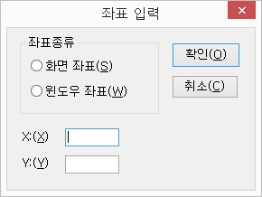

좌상단으로 이동 <Alt-Numpad7> <Insert-Numpad7>
우상단으로 이동 <Alt-Numpad9> <Insert-Numpad9>
좌하단으로 이동 <Alt-Numpad1> <Insert-Numpad1>
우하단으로 이동 <Alt-Numpad3> <Insert-Numpad3>
현재 지정된 윈도우 범위의 좌상단으로 읽기포인터를 이동하고 x, y 좌표값을 읽습니다.
좌표값은 화면 좌표(절대 좌표)입니다.
현재 지정된 윈도우 범위의 우상단으로 읽기 포인터를 이동하고 화면 좌표값을 알려줍니다.
현재 지정된 윈도우 범위의 좌하단으로 읽기포인터를 이동하고 x, y 좌표 값을 읽습니다.
좌표값은 화면 좌표(절대 좌표)입니다.
현재 지정된 윈도우 범위의 우하단으로 읽기 포인터를 이동하고 x, y 좌표값을 읽습니다.
좌표값은 화면 좌표(절대 좌표)입니다.
현재 읽기 포인터의 위치에서 이동 픽셀 설정값만큼 읽기 포인터를 이동시키고 x, y 좌표를 알려줍니다. 픽셀 이동시 글자를 만나면 좌표와 함께 글자도 읽어주고, 읽기 포인터는 현재 지정된 윈도우 범위를 벗어날 수 없습니다. (비프음 출력)
좌표값은 화면 좌표(절대 좌표)를 기준으로 합니다.
현재 읽기 포인터의 위치를 사용자가 입력한 좌표로 이동합니다. 입력 가능한 좌표는 화면 좌표와 윈도우 좌표 모두 사용할 수 있습니다.
특정 픽셀 이동 방법
① <Alt-Shift-Numpad5>키를 눌러 <좌표 입력> 대화상자를 엽니다.

② 윈도우 좌표를 사용하고자 한다면 <Shift-Tab>키를 눌러 '좌표 종류' 라디오 버튼으로 이동한 뒤 윈도우 좌표에 포커스합니다. 좌표 종류의 기본값은 화면 좌표입니다.
화면 좌표 : 전체 화면의 좌상단을 0,0으로 하는 좌표
윈도우 좌표 : 현재 활성 윈도우의 좌상단을 0,0으로 하는 좌표
포커스로 이동 <Numpad+(플러스)>
포인터를 캐럿으로 이동 <Ctrl-Numpad+(플러스)> <Insert-Numpad+(플러스)>
뷰 포인터를 마우스 포인터로 이동 <Alt-Shift-Numpad+(플러스)>
마우스 포인터를 뷰 포인터로 이동 <Ctrl-Shift-Numpad+(플러스)>
현재 포커스된 객체로 읽기 포인터를 이동시키고 포커스된 객체를 읽어줍니다.
읽기 포인터를 캐럿이 위치한 곳으로 이동시키고 현재 캐럿이 있는 줄의 내용을 읽습니다.
캐럿이 없는 경우에는 비프음과 함께 "캐럿이 없습니다"라고 음성출력합니다.
현재 읽기 포인터를 실제 마우스 포인터가 위치한 곳으로 이동합니다.
실제 마우스 포인터를 현재 읽기 포인터가 위치한 곳으로 이동시킵니다.